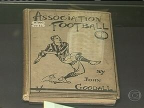
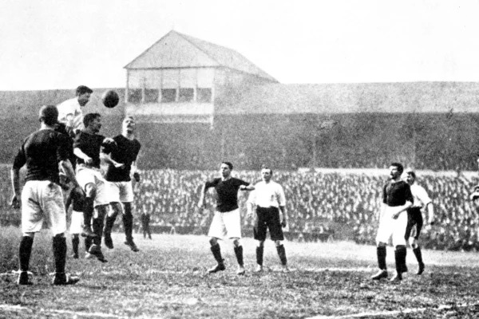

A história do futebol é muito antiga. Jogos com bola já eram
praticados por diferentes povos há muitos séculos. Porém,
o futebol como conhecemos atualmente começou a ser organizado
na Inglaterra durante o século XIX.
Antes de existirem regras oficiais, diferentes escolas e
clubes utilizavam suas próprias maneiras de jogar. Algumas
permitiam o uso das mãos, enquanto outras davam preferência
aos pés.
Quem criou o futebol moderno?
Não existe apenas uma pessoa que tenha criado o futebol.
O esporte moderno foi resultado de um processo de
organização das regras que aconteceu principalmente na
Inglaterra.
Um dos nomes mais importantes desse processo foi
Ebenezer Cobb Morley. Ele participou da
criação da Football Association e teve papel importante
na elaboração das primeiras regras do futebol.
Em 26 de outubro de 1863, representantes de clubes e escolas
se reuniram em Londres para criar uma associação que
estabelecesse regras comuns para o esporte.
As primeiras regras
Em 1863 foram estabelecidas as primeiras regras oficiais
do chamado "association football". Elas ajudaram a
diferenciar o futebol de outros esportes praticados na
época, principalmente o rugby.
As primeiras regras eram muito diferentes das atuais.
Por exemplo, o jogo ainda não possuía todas as regras
que conhecemos hoje e algumas formas de contato com a
bola eram diferentes.

A primeira partida
Uma das primeiras partidas registradas sob as novas regras
da Football Association aconteceu em Londres ainda em 1863.
A FIFA destaca que o primeiro jogo utilizando essas leis
ocorreu na capital inglesa naquele mesmo ano.
É importante lembrar que já existiam partidas de futebol
antes de 1863. O que mudou naquele período foi a criação
de regras mais organizadas para o chamado futebol de
associação.

O futebol se espalha pelo mundo
Depois de ser organizado na Inglaterra, o futebol começou
a se espalhar para outros países. Trabalhadores, estudantes,
comerciantes e imigrantes ajudaram a levar o esporte para
diferentes partes do mundo.
Em 1904 foi criada a FIFA, organização responsável por
coordenar o futebol internacional. Com o passar dos anos,
o esporte ganhou cada vez mais popularidade.
O futebol no Brasil
O futebol chegou ao Brasil no final do século XIX. Charles
Miller é tradicionalmente apontado como uma das principais
figuras responsáveis pela introdução e divulgação do
esporte no país.
Com o tempo, o futebol deixou de ser praticado apenas por
grupos mais restritos e se tornou extremamente popular
entre diferentes classes sociais.
O futebol atualmente
Atualmente, o futebol é praticado em praticamente todos os
continentes. Grandes competições como a Copa do Mundo, a
Liga dos Campeões e os campeonatos nacionais atraem milhões
de torcedores.
O esporte também se tornou uma importante parte da cultura,
da economia e da identidade de muitos países.